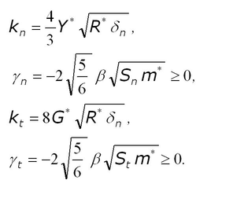

gran model hertz model¶
Syntax¶
model hertz [other model_type/model_name pairs as described here ] keyword values
- zero or more keyword/value pairs may be appended to the end (after all models are specified)
limitForce values = 'on' or 'off' on = ensures that the normal force is never attractive (an artefact that can occur at the end of a collision). off = standard implementation that might lead to attractive forces. tangential_damping values = 'on' or 'off' on = activates tangential damping off = no tangential damping heating_normal_hertz values = 'on' or 'off' on = model contributes to surface heating in the frame ofsurface sphere/heatableoff = model does not contributes to surface heating disableNormalWhenBonded values = 'on' or 'off' on = if thecohesion bondmodel is used, then the normal force is only added if the two particles are not bonded of = the normal force is always added if two particles overlap computeDissipatedEnergy values = 'on' or 'off' on = the normal model saves the dissipated energy for each contact for the use infix calculate/dissipated_energyof = no values are saved computeElasticPotential values = 'on' or 'off' on = the normal model saves the current elastic potential for each contact for the use infix calculate/normal_elastic_energyof = no values are saved
Description¶
This granular model uses the following formula for the frictional force between two granular particles, when the distance r between two particles of radii Ri and Rj is less than their contact distance d = Ri + Rj. There is no force between the particles when r > d:

In the first term is the normal force between the two particles and the second term is the tangential force. The normal force has 2 terms, a spring force and a damping force. The tangential force also has 2 terms: a shear force and a damping force. The shear force is a “history” effect that accounts for the tangential displacement (“tangential overlap”) between the particles for the duration of the time they are in contact. This term is controlled by the tangential model in action Keyword tangential_damping can be used to eliminate the second part of the force in tangential direction. The way how the Coulomb friction limit acts is also controlled by the tangential model chosen by the user.
The quantities in the equations are as follows:
- delta_n = d - r = overlap distance of 2 particles
- k_n = elastic constant for normal contact
- k_t = elastic constant for tangential contact
- gamma_n = viscoelastic damping constant for normal contact
- gamma_t = viscoelastic damping constant for tangential contact
- delta_t = tangential displacement vector between 2 spherical particles which is truncated to satisfy a frictional yield criterion
- contactradius = contact radius, equal to particle radius - 0.5 * delta_n
- v_n = normal component of the relative velocity of the 2 particles
- v_t = tangential component of the relative velocity of the 2 particles
- w_r = relative rotational velocity of the 2 particles
The Kn, Kt, gamma_n, and gamma_t coefficients are calculated as follows from the material properties:

To define those material properties, it is mandatory to use multiple fix property/global commands:
fix id all property/global youngsModulus peratomtype value_1 value_2 ...
(value_i=value for Youngs Modulus of atom type i)
fix id all property/global poissonsRatio peratomtype value_1 value_2 ...
(value_i=value for Poisson ratio of atom type i)
fix id all property/global coefficientRestitution peratomtypepair n_atomtypes value_11 value_12 .. value_21 value_22 .. .
(value_ij=value for the coefficient of restitution between atom type i and j; n_atomtypes is the number of atom types you want to use in your simulation)
fix id all property/global coefficientFriction peratomtypepair n_atomtypes value_11 value_12 .. value_21 value_22 .. .
(value_ij=value for the (static) coefficient of friction between atom type i and j; n_atomtypes is the number of atom types you want to use in your simulation)
Warning
You have to use atom styles beginning from 1, e.g. 1,2,3,...
This model contributes to surface heating in the frame of
surface sphere/heatable if the
appropriate flag is activated (only available in the PREMIUM version).
When the cohesion model bond is used the
disableNormalWhenBonded keyword can be used. If this parameter is set to ‘on’
then the normal model will only compute its contribution if the two neighboring
particles do not have an active bond. If a bond breaks and the particles overlap
the current delta_n will be set to zero so that no sudden repulsion takes
place. This is handled internally by having an offset value that shrinks to zero
once the particles start drifting apart.
Force Limiting:
Note, that not using limitForce might lead to attractive forces between particles and walls, especially in case the coefficient of restitution is small. Be sure you include this key word for the pair style and the wall model if you like to avoid this.
Restrictions¶
If using SI units, youngsModulus must be > 5e6 If using CGS units, youngsModulus must be > 5e5 When using the limitForce, the specified coefficient of restitution is only approximate. This might become problematic for low coefficients of restitution as shown in Schwager and Poschel.
heating_normal_hertz may not be available in your version of the software.
Coarse-graining information:
Using coarsegraining in
combination with this command should lead to
statistically equivalent dynamics and system state.
Note
Coarsegraining may or
may not be available in LIGGGHTS(R)-PUBLIC.
Default¶
tangential_damping = ‘on’ limitForce = ‘off’ heating_normal_hertz = ‘off’
(Di Renzo) Alberto Di Renzo, Francesco Paolo Di Maio, Chemical Engineering Science, 59 (3), p 525-541 (2004). (Note: Wrong definition of G_eq in this paper, corrected in (Di Renzo 2))
(Di Renzo 2) Alberto Di Renzo, Francesco Paolo Di Maio, Chemical Engineering Science, 60 (5), p 1303-1312 (2005).
(Ai) Jun Ai, Jian-Fei Chen, J. Michael Rotter, Jin Y. Ooi, Powder Technology, 206 (3), p 269-282 (2011).
(Brilliantov) Brilliantov, Spahn, Hertzsch, Poschel, Phys Rev E, 53, p 5382-5392 (1996).
(Schwager) Schwager, Poschel, Gran Matt, 9, p 465-469 (2007).
(Silbert) Silbert, Ertas, Grest, Halsey, Levine, Plimpton, Phys Rev E, 64, p 051302 (2001).
(Zhang) Zhang and Makse, Phys Rev E, 72, p 011301 (2005).